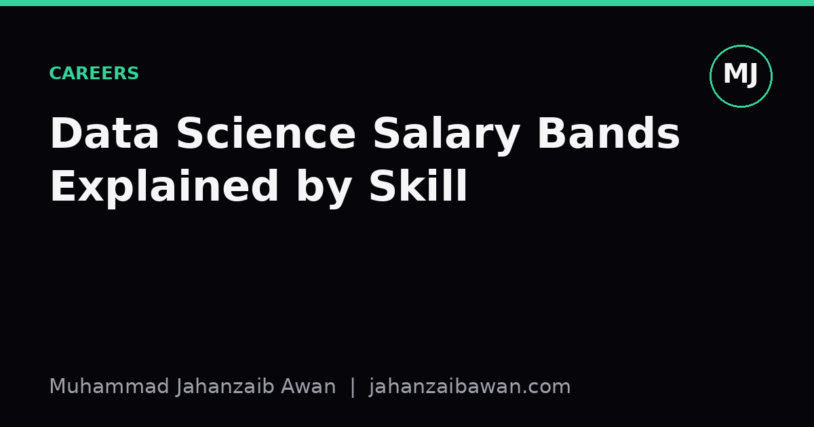

Data Science Salary Bands Explained by Skill
Salary bands are not random. They map fairly closely onto how much uncertainty and risk a person can absorb before their work is trusted.

Why job titles lie but bands don't
Ask ten people what a 'senior data scientist' can do and you will get ten different answers. Titles are cheap, companies hand them out for retention reasons as often as for merit. Salary bands, on the other hand, tend to be more honest, because they are usually set against a rubric that someone in finance or HR actually has to defend. When I look at the spread between a junior band and a senior one, the gap is rarely about knowing more Python syntax. It is about how much uncertainty a person can absorb before their output starts costing the business money.
Think about what happens when a model goes into production and the numbers look worse than in testing. A junior person often cannot tell you why. A senior person has usually already asked, before deployment, questions like whether the training and test sets were split in a way that respects time, whether the target was defined using information that would not exist at prediction time, and whether the reported accuracy would survive a slightly different random seed. That difference in questioning is not stylistic, it is the entire justification for the pay gap.
So rather than treating salary bands as arbitrary HR bureaucracy, I find it more useful to treat them as a rough map of trust. Each band corresponds to a level of unsupervised judgement the organisation is willing to extend to you, and judgement is expensive to build because it usually only comes from having been burned by a mistake once.
The entry band: competent execution
At entry level, the skill that is actually being paid for is reliable execution of a well specified task. If someone hands you a labelled dataset and asks for a classifier with a reasonable baseline, an entry level data scientist should be able to produce a clean train and test split, run a couple of standard models such as logistic regression and a gradient boosted tree, report accuracy or F1 honestly, and hand over code that another person can rerun. That is a genuinely useful and non trivial skill set, and it is why entry salaries in this field are usually well above the median graduate salary in other sectors.
What is not usually being paid for at this level is deep scepticism. A concrete example: imagine a dataset predicting whether a loan will default, where the target was created using a column that records the final repayment status, and that column was itself only populated after the loan outcome was known. An entry level analyst might report a wonderful 96 percent accuracy without noticing that the feature set contains a proxy for the label. It is a completely understandable mistake, and it is exactly the kind of mistake that separates entry pay from the next band up, because catching it requires having seen it happen before.
The honest way to think about entry pay is that you are being compensated for turning a clear brief into clean, working, reproducible output. That alone is worth real money, because a shocking amount of analytical work in industry never even reaches that bar.
The mid and senior bands: the price of scepticism
The jump into a mid level band is usually justified by the ability to spot when a result is too good to be true and to work out why. Take that same 96 percent accuracy figure. A mid level data scientist should instinctively ask what the base rate of the positive class is. If only 4 percent of loans default, a model that always predicts 'no default' scores 96 percent accuracy while being completely useless. Knowing to check the confusion matrix, look at precision and recall separately, and compare against that trivial baseline is the difference between reporting a number and reporting a finding.
Senior pay tends to be justified by something a level above that: the ability to design the evaluation before the modelling even starts, in a way that anticipates how the system will fail in production. This includes leakage aware splitting, such as ensuring that if the same customer appears in both training and test data across different time periods, the split is done by customer or by time rather than by random row, because random splitting can let the model memorise customer specific patterns and produce a test score that will never be reproduced on genuinely new customers. It also includes the discipline of running the same pipeline with several random seeds and reporting a range rather than a single flattering number, because a single run can easily overstate performance by several percentage points purely by chance.
A concrete illustration: suppose two models are compared on churn prediction, model A scoring 0.81 AUC and model B scoring 0.83 AUC on one split. A junior analyst declares B the winner. A senior one reruns both across five different time based splits and finds A ranges from 0.78 to 0.84 while B ranges from 0.80 to 0.82. The honest conclusion is that the two models are statistically indistinguishable given the variance, and the business decision should probably rest on cost, interpretability, or maintenance burden rather than a single leaderboard number. That kind of restraint, resisting the urge to declare a winner from noise, is precisely what senior salaries are meant to compensate, because getting it wrong at scale can mean shipping the worse model and not knowing it for months.
What this means if you are trying to move up a band
If you want to understand why your own salary sits where it does, the most useful exercise is to look at your last three pieces of analysis and ask honestly which band's questions you were actually asking. Did you check the base rate before celebrating an accuracy figure. Did you check whether your split could leak information across time or across grouped entities such as customers or households. Did you report variance across seeds or splits rather than a single number.
None of this requires exotic mathematics. It requires the habit of distrusting your own good results until you have tried reasonably hard to break them, and enough experience with leakage and variance to know where to look. Building that habit deliberately, by re-auditing old projects with these questions in mind, tends to move people up a band faster than learning another modelling library ever will.